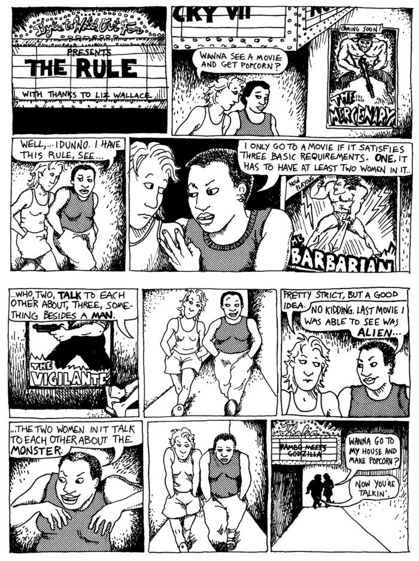
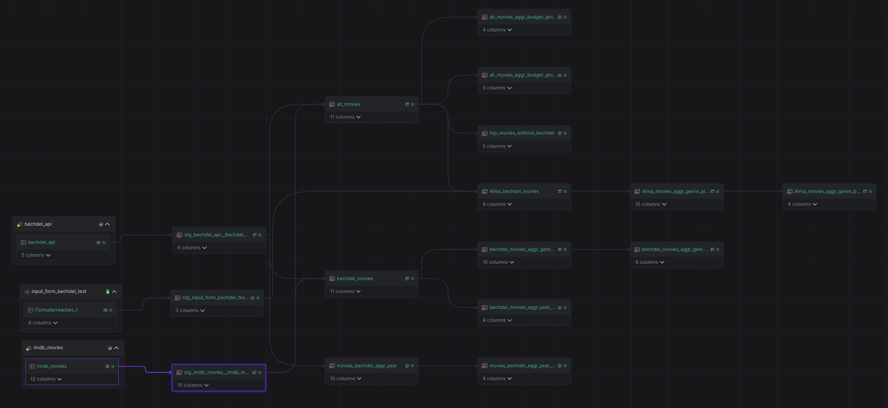

Usually, I don’t ‘do’ data engineering. As a researcher, I am mainly focused on data analysis and building machine learning models. For my personal projects, I often patch together a bunch of dataframes and visualize them as I go, without periodical updates. Overall, I often brush over the part where I structure my data pipelines more eloquently and make them reproducible and scalable. However, I was recently tempted to partake in the Y42 hackathon, which motivated me to rethink my focus on data analysis and visualization. This is my submission for said hackathon, I hope you enjoy!
For this hackathon I finally delved into a feminist phenomenon that I have loved for a long time: the Bechdel test. The Bechdel test (Wikipedia), introduced in a comic in a feminist newspaper in 1985, is a measure of the representation of women in film. A movie passes the test if it fits the following requirements:
Once you start paying attention to these requirements while watching movies (or series), you soon realize how little of them meet these ‘simple’ guidelines. This only shows how lacking the presence of women in most popular media, and fiction in particular is. I had been wanting to do something with this test, and in particular, with the data from bechdeltest.com and this hackathon allowed me to do so! My main goals were to enrich the existing dataset of movies that do (or do not) pass the test with additional knowledge such as genre, budget, and popularity. I also wanted to create visualizations that showcased trends in cinema in general and in the presence of women in movies in particular.
I selected three data sources for this project:
I used the Python cloud functions of Y42 for ingesting the Kaggle and bechdeltest.com dataset and used a build-in functionality of the standard connector for the Google sheet.
Once I had ingested the data from these sources, which required some tinkering, in particular, to get the Kaggle data connected, I created staging tables with the relevant columns for my project, did some reformatting to make IDs fit across tables, and included a main genre column. Once these staging tables were set up, it was easy to combine and aggregate data in additional tables using SQL. It had been a while since I had used SQL but it was surprisingly easy to restructure data and aggregate variables. I initially created three main tables:
Starting from these tables I was able to quickly create aggregate results which could answer specific questions I had, such as: how has the representation of women in movies changed over the years? How has gross profit and budget of movies changed? Which popular movies do not have a Bechdel test rating yet?
Now that I had all my tables set up I could use the scheduler. Usually, I build visualizations one-off, but using a scheduler will allow my tables to change over time as people add new ratings to bechdeltest.com or as I add new entries to my form. I did not manage to export my data in an automated way, since I was struggling with the Google Sheets export functionality, so for now I sticked to exporting to csv and running my visualizations locally from there on out. However, using the scheduler and being able to clearly visualize the lineage of my tables already enabled me to make my data processing much more reproducible and scalable. It will now be significantly easier to export the updated tables and renew my figures compared to my previous projects. For those interested, you can see my final Y42 workspace below!
I have created some visualizations based on my tables which you can find below. I started all of these visualizations with a specific question in mind and though my dataset was limited (just 3K for the metadata like genre, budget, profit) I think these visualizations give a nice initial taste of the topic.
For this visualization, I used the table with all Bechdel-rated movies, and calculated the percentage of movies that scored a 0, 1, 2, and 3 per year. I cut off at the year 1930 since the number of movies for the earlier years was so low that the percentage was not representative at all. I noticed that especially in the last few decades the representation of women who talk about something different than men has gone up.
For this visualization, I used the smaller Kaggle dataset that included gross profit and budget for each movie. I took the average budget and profit per year. When I visualized this, I noticed a sharp dip which I thought was a mistake, perhaps caused by missing data for that year. However, when I looked at the actual years this concerned (2020 and 2021) I soon realized this was due to the COVID-19 pandemic. Besides that, it is clear that budgets for movies as well as profits have severely increased, especially in the last few years.
Finally, I had an opportunity to use a Nightingale rose chart! This chart has been on my wishlist for a while but it never seemed fitting for my projects. In this case, I used the combination of genre data from the Kaggle dataset and Bechdel ratings. I excluded some of the less popular genres. I noticed that Horror seems to be a very inclusive genre, though that might just be because it leaves little opportunity for romance.
This is the part where I motivate you to contribute to the bechdeltest.com (no spon). I created this visualization to show which popular movies across years and genres do not have a Bechdel rating. Hover over the movies to spot any you might have seen (and know the rating for) and submit the rating directly. I have included the IMDb ID to make this easier for you.
As much as I loved using the Nightingale rose chart I must admit it might not have had the highest readability. I, therefore, created a heatmap as well, showing the same data: movies per genre and Bechel-rating.
Finally, I wanted to compare my own movies dataset to the general trends. This visualization also seemed like the best fit for that. I am surprised by the amount of adventure movies I watch, but further than that I think I will need to add a lot more movies to my Google sheet in order to get a representative sample of my taste.
Some of my takeaways and learnings from this hackathon: